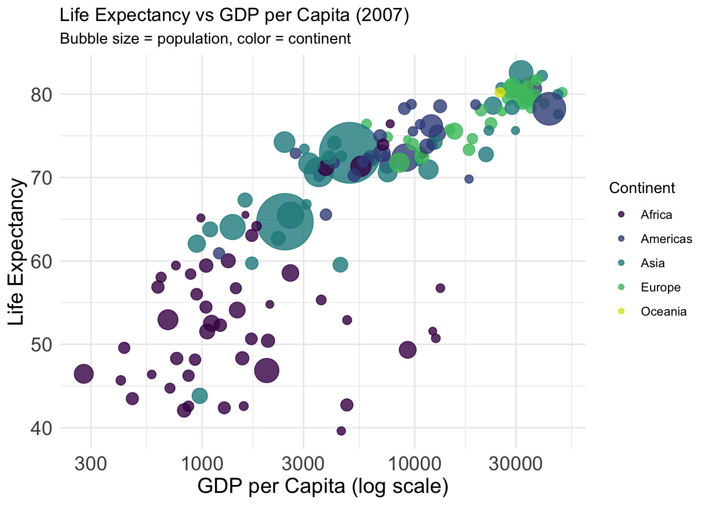
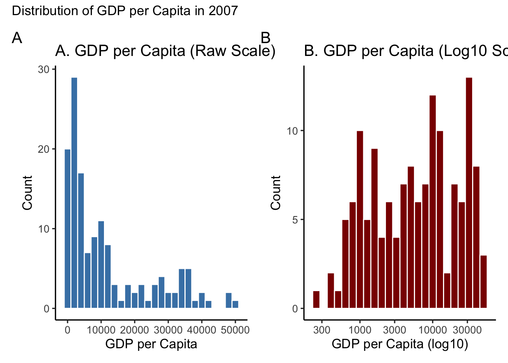
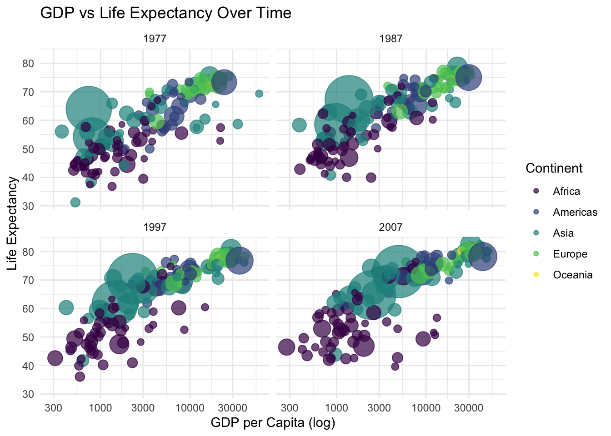
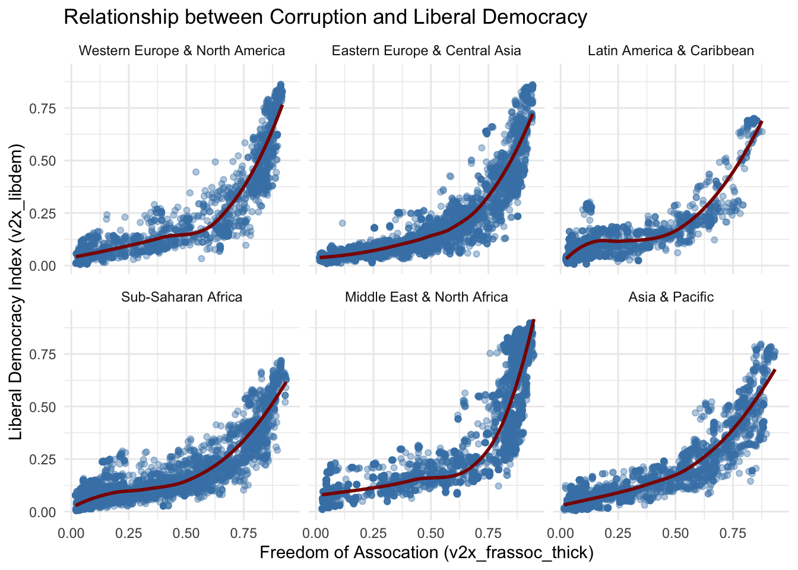
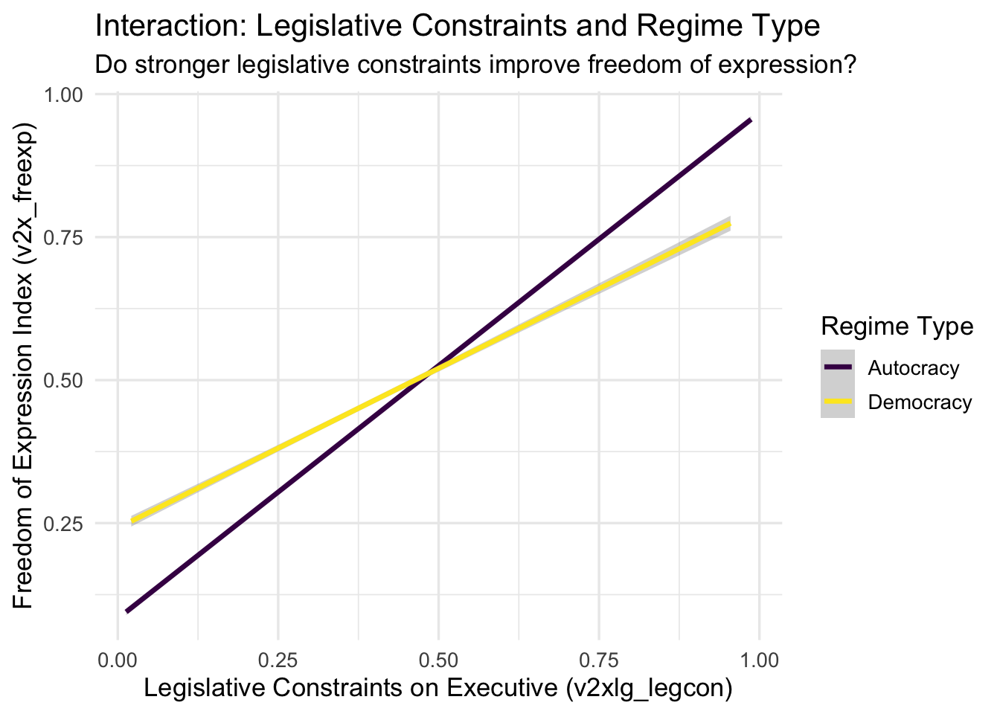

The following exercises help you explore real-world development data using ggplot2, gapminder and V-Dem.
🧠 Challenge Exercise: Explore a Development Pattern
Before seeing any example plots, try to visualize the following:
How does a country’s population size relate to life expectancy and income level?
Your task: Create a visualization using the gapminder dataset for the year 2007 that captures the relationship between: - lifeExp: Life expectancy - gdpPercap: GDP per capita - pop: Population
You may use any type of plot or mapping of variables (e.g., x-axis, color, size), but aim to show all three variables clearly.
⬇️ Fill in the code below. Afterward, we’ll compare approaches and interpretations.
Code
# ✏️ Add here your own code!library(viridis) gapminder %>%filter(year ==2007) %>%ggplot(aes(x = gdpPercap,y = lifeExp,size = pop,color = continent )) +geom_point(alpha =0.8) +scale_x_log10() +scale_size(range =c(2, 20), guide ="none") +scale_color_viridis_d(option ="D", end=0.95) +labs(title ="Life Expectancy vs GDP per Capita (2007)",subtitle ="Bubble size = population, color = continent",x ="GDP per Capita (log scale)",y ="Life Expectancy",color ="Continent" ) +theme_minimal() +theme(axis.text =element_text(size =14),axis.title =element_text(size =15) )

Exercise 1: Create two Histograms of GDP per Capita
Use the 2007 data to create two histogram that shows how gdpPercap and logged gdpPercap is distributed across all countries. Arrange the plots side by side.
Hint: Use ggplot() + geom_histogram() and consider scale_x_log10().
⬇️ Fill in your code below:
Code
# ✏️ Add here your own code!gap2007 <- gapminder %>%filter(year ==2007)# A: Raw histogram (no transformation)hist_raw <-ggplot(gap2007, aes(x = gdpPercap)) +geom_histogram(binwidth =2000, fill ="steelblue", color ="white") +labs(title ="A. GDP per Capita (Raw Scale)",x ="GDP per Capita",y ="Count" ) +theme_classic(base_size =13)# B: Histogram with log-scaled x-axishist_logscale <-ggplot(gap2007, aes(x = gdpPercap)) +geom_histogram(binwidth =0.1, fill ="darkred", color ="white") +scale_x_log10() +labs(title ="B. GDP per Capita (Log10 Scale)",x ="GDP per Capita (log10)",y ="Count" ) +theme_classic(base_size =13)# Combine both using patchworkhist_raw + hist_logscale +plot_annotation(title ="Distribution of GDP per Capita in 2007",tag_levels ='A')

Exercise 2: Faceted Trend Comparison
Goal: Compare how GDP per capita and life expectancy evolved over time in three world regions.
Task:
Filter the Gapminder dataset to include only the years 1977, 1987, 1997, and 2007.
Create a scatterplot of GDP per capita vs life expectancy.
Use bubble size for population, color for continent, and facet by year.
Code
# Student solution space heregap_filtered <- gapminder %>%filter(year %in%c(1977, 1987, 1997, 2007))ggplot(gap_filtered, aes(x = gdpPercap, y = lifeExp, size = pop, color = continent)) +geom_point(alpha =0.7) +scale_x_log10() +facet_wrap(~ year) +scale_color_viridis_d() +scale_size(range =c(2, 20), guide ="none") +labs(title ="GDP vs Life Expectancy Over Time",x ="GDP per Capita (log)",y ="Life Expectancy",size ="",color ="Continent" ) +theme_minimal()

Exercise 3: Democracy and Freedom of Assocation (V-Dem)
Goal: Explore the relationship between democracy and perceived corruption.
Task:
Use V-Dem variables:
v2x_frassoc_thick (freedom of assocation)
v2x_libdem (liberal democracy index)
Visualize their relationship using a smooth line or scatterplot, and split the plot by region using facets.
Code
# Student solution space herevdem_filtered <- vdem %>%filter(!is.na(v2x_frassoc_thick), !is.na(v2x_libdem), !is.na(e_regionpol_6C)) %>%mutate(region =factor(e_regionpol_6C))# Custom region labelsregion_labels <-c("1"="Western Europe & North America","2"="Eastern Europe & Central Asia","3"="Latin America & Caribbean","4"="Sub-Saharan Africa","5"="Middle East & North Africa","6"="Asia & Pacific")ggplot(vdem_filtered, aes(x = v2x_frassoc_thick, y = v2x_libdem)) +geom_point(alpha =0.4, color ="steelblue") +geom_smooth(method ="loess", se =FALSE, color ="darkred") +facet_wrap(~ region, labeller =as_labeller(region_labels)) +labs(title ="Relationship between Corruption and Liberal Democracy",x ="Freedom of Assocation (v2x_frassoc_thick)",y ="Liberal Democracy Index (v2x_libdem)" ) +theme_minimal()
`geom_smooth()` using formula = 'y ~ x'

Exercise 4: Visualizing Interaction Effects
Goal: Create an interaction plot for the effect of Legislative Constraints and regime type on Freedom of Expression (V-Dem).
Task:
Build a plot using ggplot() with geom_line() or geom_point().
Show the interaction of v2x_freexp and a binary democracy variable on GDP (v2xlg_legcon).
Use color or linetype to distinguish regime type.
Code
# Student solution space herevdem_interact_data <- vdem %>%filter(!is.na(v2xlg_legcon),!is.na(v2x_freexp),!is.na(v2x_regime) ) %>%mutate(regime_type =ifelse(v2x_regime ==1, "Democracy", "Autocracy") )ggplot(vdem_interact_data, aes(x = v2xlg_legcon, y = v2x_freexp, color = regime_type)) +geom_smooth(method ="lm", se =TRUE, linewidth =1.2) +scale_color_viridis_d(option ="D") +labs(title ="Interaction: Legislative Constraints and Regime Type",subtitle ="Do stronger legislative constraints improve freedom of expression?",x ="Legislative Constraints on Executive (v2xlg_legcon)",y ="Freedom of Expression Index (v2x_freexp)",color ="Regime Type" ) +theme_minimal(base_size =13)
`geom_smooth()` using formula = 'y ~ x'

Exercise 4: Mapping Democracy
Goal: Map the latest available democracy index globally using a choropleth map.
Task: - Use the latest year in the V-Dem data. - Use a spatial join or merge with a world shapefile (e.g., from rnaturalearth). - Plot a map using geom_sf() and fill countries by v2x_libdem. - Use scale_fill_viridis_c() for color.
Warning: There was 1 warning in `mutate()`.
ℹ In argument: `iso3c = countrycode(country_name, "country.name", "iso3c")`.
Caused by warning:
! Some values were not matched unambiguously: Kosovo, Somaliland, Zanzibar
Code
world <-ne_countries(scale ="medium", returnclass ="sf")world_map <-left_join(world, latest_vdem, by =c("iso_a3"="iso3c"))ggplot(world_map) +geom_sf(aes(fill = v2x_libdem)) +scale_fill_viridis_c(option ="D", na.value ="grey90") +labs(title ="Liberal Democracy Index (Most Recent Year)",fill ="v2x_libdem" ) +theme_minimal()